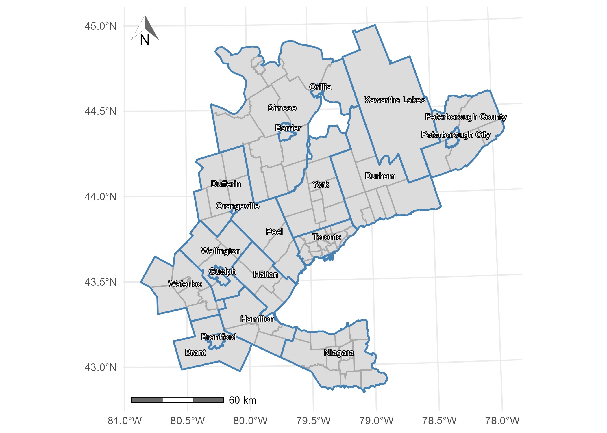
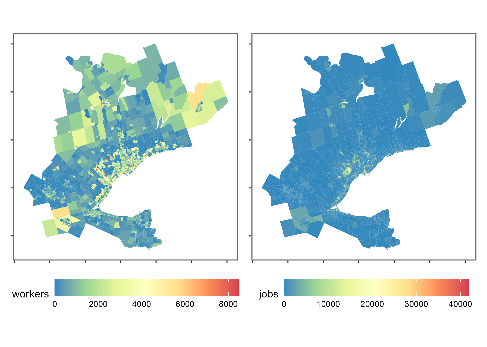

2016 Transportation Tomorrow Survey (TTS) data package: trips and estimated travel time to work in the Greater Golden Horsehoe area, Canada
This package contains objects which are sourced from the 2016 Transportation Tomorrow Survey (TTS) and objects curated to facilitate the use and analysis of TTS data. TTS 2016 is one of the largest travel surveys in southern Ontario, Canada, and a slice of this survey has been cleaned, packaged, and augmented for easy use in an R environment.
A data paper describing and discussing this package has been published:
Soukhov, A., & Páez, A. (2023). TTS2016R: A data set to study population and employment patterns from the 2016 Transportation Tomorrow Survey in the Greater Golden Horseshoe area, Ontario, Canada. Environment and Planning B: Urban Analytics and City Science, 50(2) 556-563. DOI:10.1177/23998083221146781

What is this data package?
{TTS2016R} is an open data product. Open data products are the result of turning source data (open or otherwise) into accessible information that adds value to the original inputs see Arribas et. al (2021). The product presented here is an R data package that consists of objects sourced from the 2016 Transportation Tomorrow Survey (TTS) or curated to facilitate the use and analysis of TTS data. This package includes person-to-jobs origin-destinations, traffic analysis zone (TAZ) boundaries and planning/municipality boundaries for the Greater Golden Horse area (GGH) in Ontario, Canada Data Management Group (2018). In addition, the package includes TAZ centroid-to-centroid travel times by car computed using package r5r.
Data from the TTS are freely available to the public through the TTS Data Retrieval System but the raw data can be technically demanding, cumbersome to work with, and could require multiple software applications to process. By pre-processing the data in the R environment, {TTS2016R} offers a slice of the TTS data useful to understand patterns of commuting to work in the region. It also provides open infrastructure for additional TTS or complementary data sets to be added by the authors or a wider open-source community in the future.
Setup
Installation:
if (!require("remotes", character.only = TRUE)) {
install.packages("remotes")
}
remotes::install_github("soukhova/TTS2016R",
build_vignettes = TRUE)Data Overview
The 2016 Transportation Tomorrow Survey (TTS) data is from the the Greater Golden Horseshoe (GGH), an area that is located within the province of Ontario, Canada (43.6°N 79.73°W). Included within are the associated municipality boundaries, boundaries of the Traffic Analysis Zones (TAZ), a table with the number of full-time jobs and associated full-time workers at each TAZ, and the trips (by primary mode) from origin (residential TAZ) to destination (workplace TAZ). Also included are calculated travel times by car (calculated via r5r) and derived impedance function values corresponding to the cost of travel based on the trip length distribution.

The plot that follows has a spatial visualization of the number of workers and jobs within each TAZ:

Let’s take a look at a slice of the TTS 2016 OD data. We filter the OD table to show a few OD pairs that have 2 workers at the origin and their associated estimated car travel time (minutes):| Origin | Destination | Workers | Travel Time (min) |
|---|---|---|---|
| 3640 | 3718 | 2 | 24 |
| 3640 | 3849 | 2 | 20 |
| 3640 | 3866 | 2 | 20 |
| 3879 | 3877 | 2 | 8 |
| 3879 | 4003 | 2 | 17 |
| 3879 | 4007 | 2 | 18 |
| 3879 | 63 | 2 | 24 |
| 8417 | 3152 | 2 | 43 |
| 8417 | 3707 | 2 | 62 |
| 8417 | 3816 | 2 | 65 |
| 8417 | 55 | 2 | 82 |
| 8417 | 8415 | 2 | 43 |
See .Rmd files in the \data-raw folder for additional details on how the included data sets were compiled. See the vignettes for detailed examples using the data sets and comparing comparison of different accessibility measures.
Contributing to this data package
The purpose of this data package is to make the data of the TTS 2016 easily and freely available for analysis in a R environment. Currently, the data package provides a few slices of the TTS 2016, but we invite others from the community to request additional data, report issues and even contribute to the data package.
If interested in contributing, please try to adhere to the following steps:
- If you notice spelling errors or other hick-ups, please submit an issue.
- If you use the data package and would like to share an interesting use case or analysis, please fork the repository, save the analysis file in vignettes and submit a pull request. Analysis files will be reviewed and added as articles (with full credit).